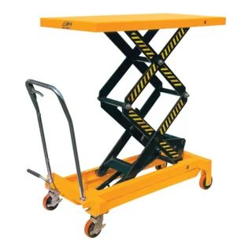
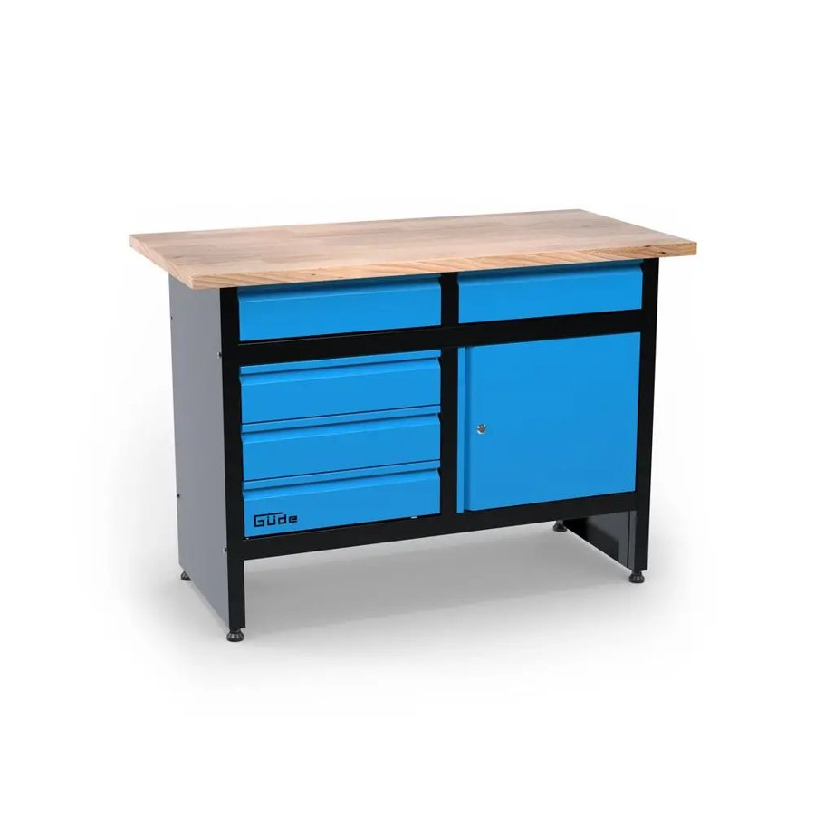
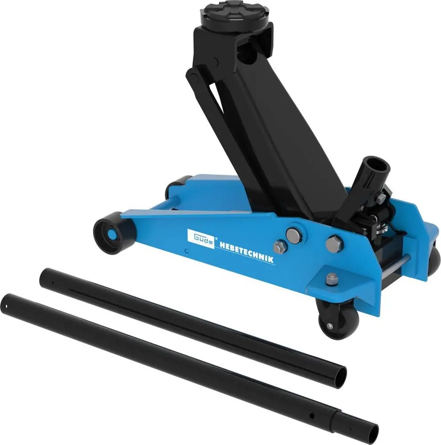
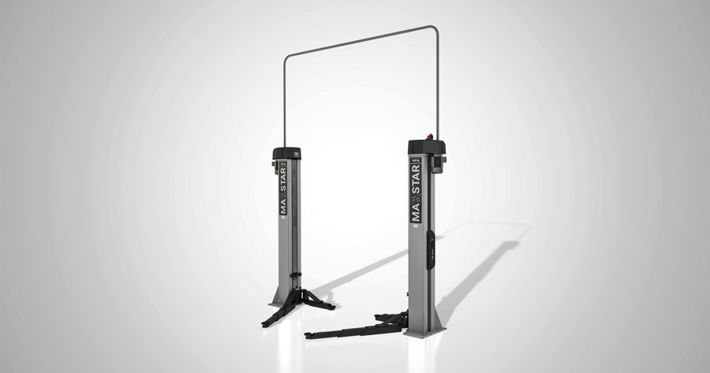
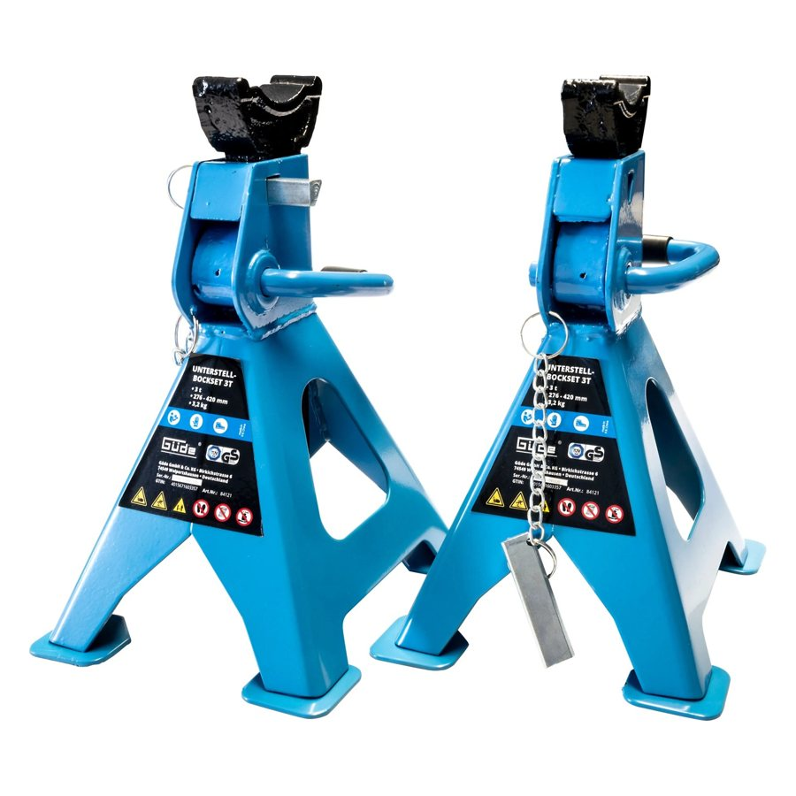
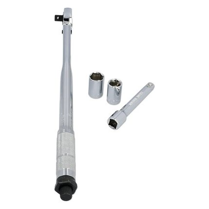
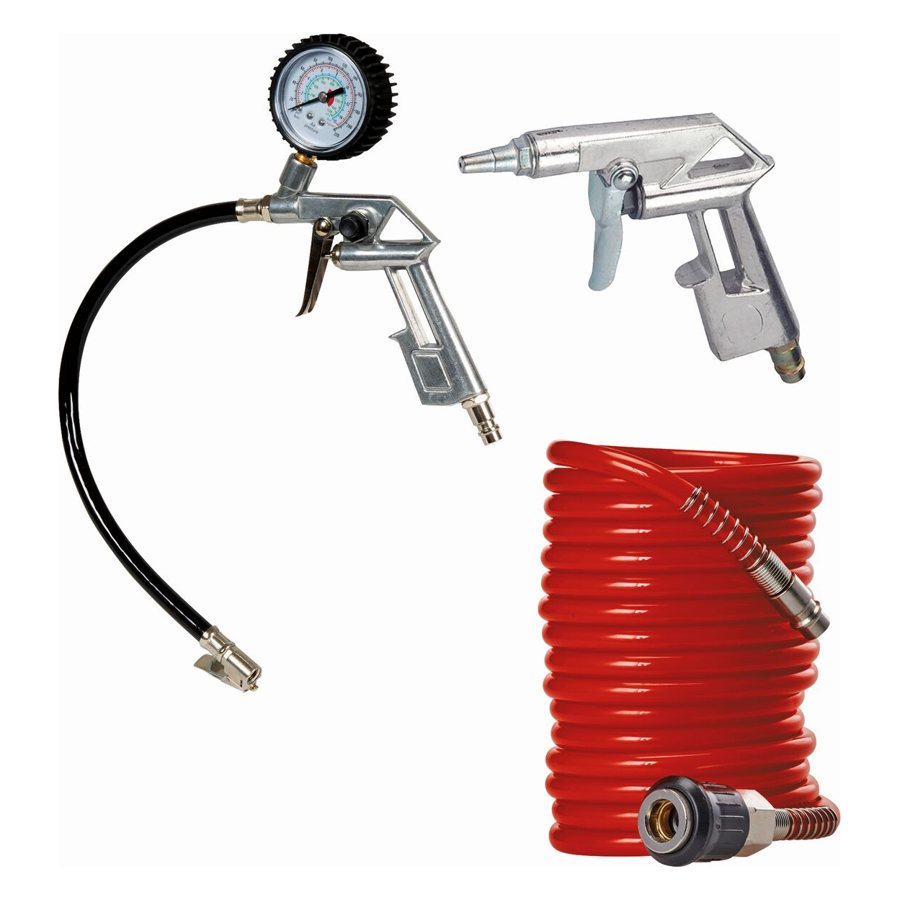
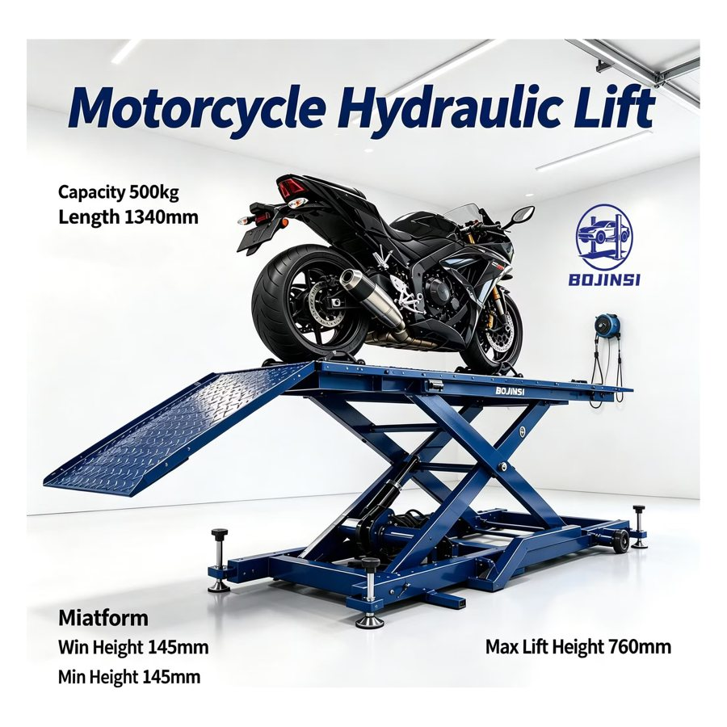
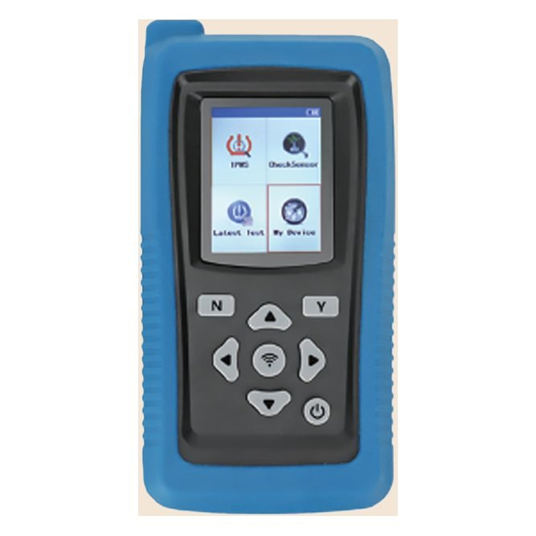

图片仅供参考，展示产品类型。
车间与车辆设备
全自动汽车轮胎拆装机
带辅助臂的汽车轮胎拆装机。
可拆装轮胎并保护轮辋。夹持范围、气源需求和辅助臂很重要。
技术参数
| 类型 | 全自动,辅助臂 |
|---|---|
| 海关编码（HS） | 84798997 |
欧盟标准与法规
2006/42/EG / (EU) 2023/1230机械指令,2027年1月20日起为机械法规2014/35/EU低电压指令(CE)2014/30/EU电磁兼容指令
搭配产品

本类别其他产品

4吨双柱电动液压举升机

3.5–4吨双剪式电动液压举升机电动液压双剪式举升机，适用于轿车和厢式货车，作业区域内无立柱。

全自动龙门式洗车机

200巴冷水高压清洗机 （三相400伏）

500升10巴400伏活塞式空压机

带抽屉车间工作台 （2米）坚固的钢制工作台，配多层板台面和可上锁抽屉，适用于车间和仓库。

3吨液压卧式千斤顶

7抽屉钢制工具车 （滚轮工具柜）可移动钢制工具车，配七个滚珠滑轨抽屉和中央锁。

4.5吨重型双柱液压举升机

3吨汽车支撑架 （一对），高度275–415毫米可调，棘齿锁止每只额定承载3吨的钢制支撑架一对，用于安全支撑已由千斤顶顶起的车辆。

1/2英寸扭力扳手套装，28–210 Nm，含17/19毫米套筒和加长杆 （换轮胎用）带1/2英寸方头的预置式（咔嗒声）扭力扳手，用于轮胎螺母，配套筒和加长杆成套供货。

空压机气动配件套装 （可选5/8/10米PU螺旋气管、快速接头、吹尘枪、轮胎充气器）由吹尘枪、轮胎充气器和带快速接头的PU螺旋气管组成的入门套装，适用于8 bar以内的空压机。

216件工具组合 （1/4、3/8和1/2英寸套筒、棘轮扳手、扳手、批头），带工具箱，适配工具车含216件的分类机修工具组合，可把空工具车变成可直接使用的车间装备。

摩托车举升机 500 kg,液压剪式可移动液压剪式摩托车举升台,最大500 kg。

OBD2诊断仪 (含TPMS功能)读取故障码和胎压传感器的手持设备。

可折叠发动机吊机 2 t (液压)可折叠液压车间吊机,最大2 t。
废机油收集抽油机 80 L (气动,移动式)80 L移动油箱,用压缩空气抽取废机油。

MIG/MMA逆变焊机 200 A最大200 A的MIG及手工焊逆变焊机。

12/24 V 10 A 全自动蓄电池充电器12 V/24 V铅酸蓄电池全自动充电器。